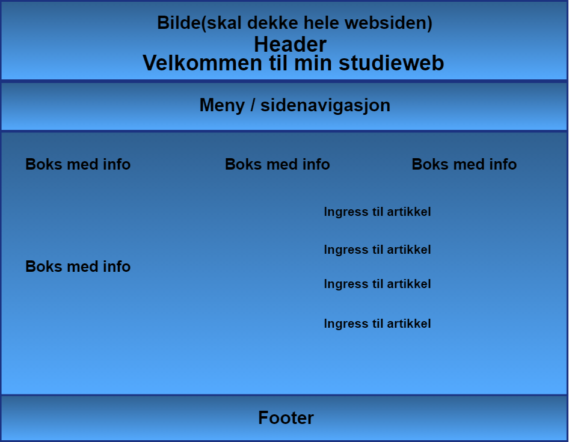
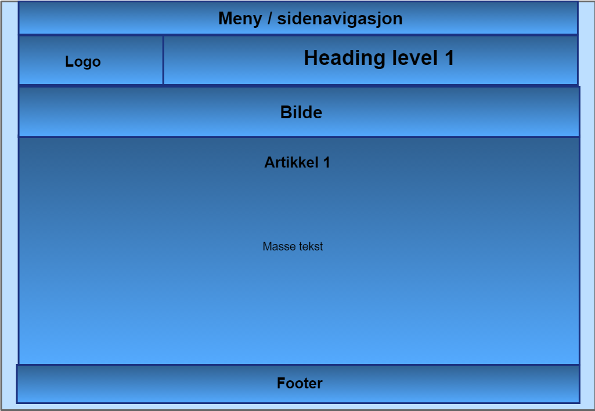

Ideen til denne siden kom når jeg fikk en skoleoppgave om å lage en egen studieweb. Når jeg skulle planlegge websiden satt jeg meg først ned å tenkte hvordan jeg ville at siden skulle se ut(designet) og evt. Om jeg skulle bruke et bilde som bakgrunn. Deretter begynte jeg å tenke på innholdet, det gjorde det litt enklere å vite hva jeg skulle skrive om i og med at vi hadde fått vite noen emner på forhånd. Etter jeg hadde funnet ut av dette begynte jeg å lage skisser i programmet pencil. Der satt jeg inn bokser, overskrifter og tekst, slik at jeg skulle fikk et lite inntrykk av hvordan siden kunne settes opp. Når det gjelder plassering av elementer har jeg plassert de der jeg synes de passer inn og mener det ser bra ut. Jeg har også funnet noen sider på nettet som jeg har hentet inspirasjon fra i form av oppsett av innhold, bruk av bilder og logo/ikoner.
 Skissene er litt annerledes og har et litt annet oppsett enn sidene, men som sagt det er bare skisser og ikke et endelig resultat!